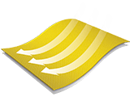

Duopel fabric is the most balanced waterproof-breathable fabric solution in the indystry, with advanced windproof protection thrown in for good measure.
Always dry.
Duopel fabric has achieved the industry’s standard waterproof rating requirement, which means water stays out and wearers
stay dry.

Always comfortable. Duopel fabric allows moisture to pass through quickly and effectively, providing optimal comfort for wearers involved in any activity, at every level of intensity.

Always the right temperature. Duopel fabric excels at blocking wind, ensuring wearers enjoy consistent comfort at just the right temperature.